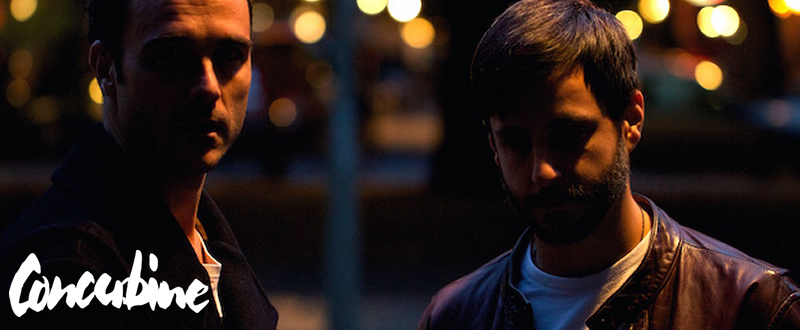
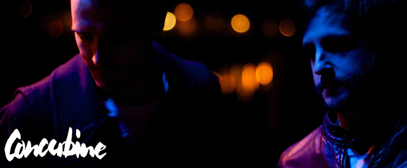
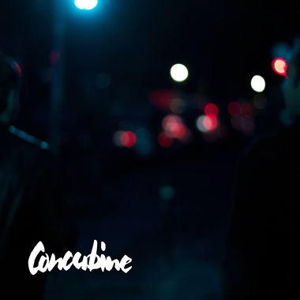

Concubine: “We’re simultaneously core players and outsiders in the techno world”
{kind=link}

The story of Concubine is one of the creative revitalisation that can blossom from collaboration. Both Noah Pred and Rick Bull AKA Deepchild had for years enjoyed the creative spoils of living in Berlin. While Pred last year reached the 100th release mark with his Thoughtless Music label, Bull has released seven albums as Deepchild over the past 15 years. But where to go from there?
Concubine has felt like a deeply personal exchange for me, and a way for Noah & myself to process some of our lives we’ve shared here in Berlin...
Rick Bull
“It’s saved me. Perhaps it saved us both,” Bull told I Voice. In spite of the provocative decision to give away their debut ‘Concubine’ album for free earlier this year, if you read between the lines, there’s talk from the duo of the financial sustainability of underground club music being an “ever-present” question. And not to forget the self-doubts that flow from the constant pressure of needing to seek new creative directions, new innovations in the studio, and finding fresh inspiration. However, the Concubine partnership represented a lifting of restrictions, and a sense of creative rejuvenation.
“Concubine has felt like a deeply personal exchange for me, and a way for Noah and myself to process some of our lives we’ve shared here in Berlin,” Bull says of the studio sessions that commenced when he moved into his new Kreuzberg apartment last year, which saw Bull’s love of sonic spontaneity fusing with Pred’s more structured approach to producing.
“I think we’ve both felt that individually, we’ve both simultaneously been core players and outsiders in the techno world. Neither of us have been ‘hit makers’, but our collective history stretches over decades. Shared communities, experiences and moments. Something has kept us here, smitten by electronic music and club culture. It’s not often I might proffer that a project is worth the investment of experience alone, but this one has been, since day one. Everything else is secondary. I can think of few greater joys than playing music with a trusted friend.”
The decision to release ‘Concubine’ as a free gift to fans poses all sorts of questions; on music’s relationship with commerce, and how this has been transformed in the digital era. I Voice leaped into these questions with the pair, though we began by asking them what we can expect when their live show is debuted to a home crowd at Berghain’s Panorama Bar later this week.
We’ll be taking an improvisational approach with an emphasis on freeform lucid moments...
Noah PredNoah: With the live show, we'll be utilising an extensive assortment of analogue and digital hardware, including multiple drum machines, synths and outboard effects, triggered and clocked by Ableton Live, and manipulated by an array of controllers including Push.
{kind=link}

Remixed versions of album tracks will combine with all new material, and we’ll be taking an improvisational approach with an emphasis on freeform lucid moments.
Rick: It ain't what you got, it’s how you use it. All are welcome in the house we are building, and freeform and lucid is indeed where we chose to live. Be the Berghain you want to be in the world.
I’ve never witnessed a response like this to a release I’ve been involved with in at least the last 10 years. It feels strange and lovely, new & hopeful, & beautifully disconcerting...
Rick Bull Your ‘Concubine’ album dropped earlier this year, and made a strong impression. What was the response like from where you’ve been sitting?
Noah: It seems like it’s just getting started. There was a healthy mix of open-minded listeners who eagerly grabbed it straight away, while on the other end of the spectrum, there seemed to be a contingent less willing to give it a chance due to it not being released through standard channels.
It’s been building nicely though, and some of the responses we’ve had have been amazing, truly humbling. I’m excited to see where it goes from here.
Rick: Personally I was overwhelmed with initial the response. I’ve never witnessed a response like this to a release I’ve been involved with in at least the last 10 years. It feels strange and lovely, new and hopeful, and beautifully disconcerting.
I guess it’s been a lesson (once more) that the value of our collective process can vastly outweigh the sum of its parts. I feel like the project presents an invitation to a conversation that feels pertinent to our community, both in Berlin and abroad. I’m just stoked people are interested.
{kind=link}

The biggest part of the Concubine story is you two producing together. Tell us a bit about the personal and professional history you guys share.
Noah: We first got in touch when Rick was supporting my label Thoughtless, and we eventually released Rick’s music as Deepchild on the label. Then we met in person playing a show together back in Toronto, and then when I moved to Berlin, Rick helped me get some of my tracks signed to Trapez LTD, and we started hanging out regularly. By the time he moved into a new flat just a couple blocks from me, it became clear we couldn’t avoid working in the studio together any longer.
Neither of us have been “hit makers”, but our collective history stretches over decades. Shared communities, experiences & moments...
Rick BullRick: Concubine has felt, above all, like a deeply personal exchange for me, and a way for Noah and myself to process some of our lives we’ve shared here in Berlin. First and foremost we’re friends, since meeting in person a few years ago whilst I was touring as Deepchild in North America. I think we’ve felt that individually, we’ve both simultaneously been core players and outsiders in the techno world. Neither of us have been “hit makers”, but our collective history stretches over decades. Shared communities, experiences and moments.
Something has kept us here, smitten by electronic music and club culture. Fascinated by both its dangerous liminality, and the promise of reconciliation it offers, its potential for healing and release. We meet primarily as friends and brothers in the studio, still in awe of the machinery, the process, the risk of failure. It’s not often I might proffer that a project is worth the investment of experience alone, but this one has been, since day one. Everything else is secondary. I can think of few greater joys than playing music with a trusted friend.
When did you begin collaborating, and how did it then come together into a project?
Noah: Right after Rick was settled in his new flat, we decided to try a session together in his studio. The first one went rather poorly. I think we were both hungover or something, and the results were less than great. But we didn’t give up. In our second session, we ended up laying down the bed of what became ‘Luxend’ within a couple hours, and from there on we were doing at least one session a week whenever we could manage. Once we sort of figured out our chemistry in the studio, everything flowed almost effortlessly.
Once again, I’ve felt like we both stand beholden to the wonders of spontaneity, improvisation, & the ghosts inhabiting our machines. Surrendering to the greater process is a big part of it...
Rick BullRick: I’m quite sure wine and terror were both involved. Wine and generosity from Noah (being the consummate gentleman), and terror from myself (being innately insecure and misanthropic, particularly when it comes to music writing). Noah’s steadiness and enthusiasm won out. I’m glad it did. It’s saved me. Perhaps it saved us both. Our writing processes seem to be a little different, Noah being more focused than I would argue my comparatively freeform and disjointed process seems, and I think that someplace in the middle we’ve both been surprised by how much fun this has been.
Improvisation seems to be the order of the day with ‘Concubine’. Tell us a little about how this approach developed for you both.
Noah: I think a lot of that comes through our process of capturing maximally expressive live takes on different instruments, and weaving these non-linear elements into one another. I guess we were just never quite in the mood to do something more restrained; there was a certain wide-eyed wildness to our sessions, a kinetic energy we wanted to convey. Dance music has a tendency to suffocate itself with its own formula. We wanted to avoid this completely.
Rick: I’m a sucker for rough, distorted, sonically compromised, poorly quantized material, but I’m also a sucker for decomposed minimalism. Grab four bars of mess and repeat it ad-infinitum type thing. I’ve felt like Noah’s contribution to this equation has been a lighter touch. A reminder to be less reductionist, with a shared investment and wonder in the process of improvisation. Once again, I’ve felt like we both stand beholden to the wonders of spontaneity, improvisation, and the ghosts inhabiting our machines. Surrendering to the greater process is a big part of it.
01. Resolution B 03:01
02. Pivoting Planes 06:56
03. Entropia 09:56
04. Apocalypse Disco 07:23
05. Drone Bloc 06:47
06. Alpha Jam City 08:02
07. Uncorp 04:16
08. Three Way 06:10
09. Luxend 09:41
10. Middle Sister 09:08
11. Seif 05:56
Written and produced by Noah Pred and Rick Bull.
Vocals on Pivoting Planes by Ray Mann.
Mastered by Jay Hodgson at Roofless Creations.
CLICK HERE TO DOWNLOAD